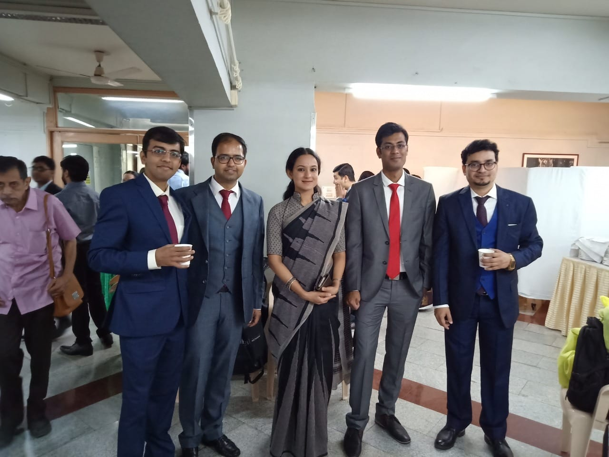
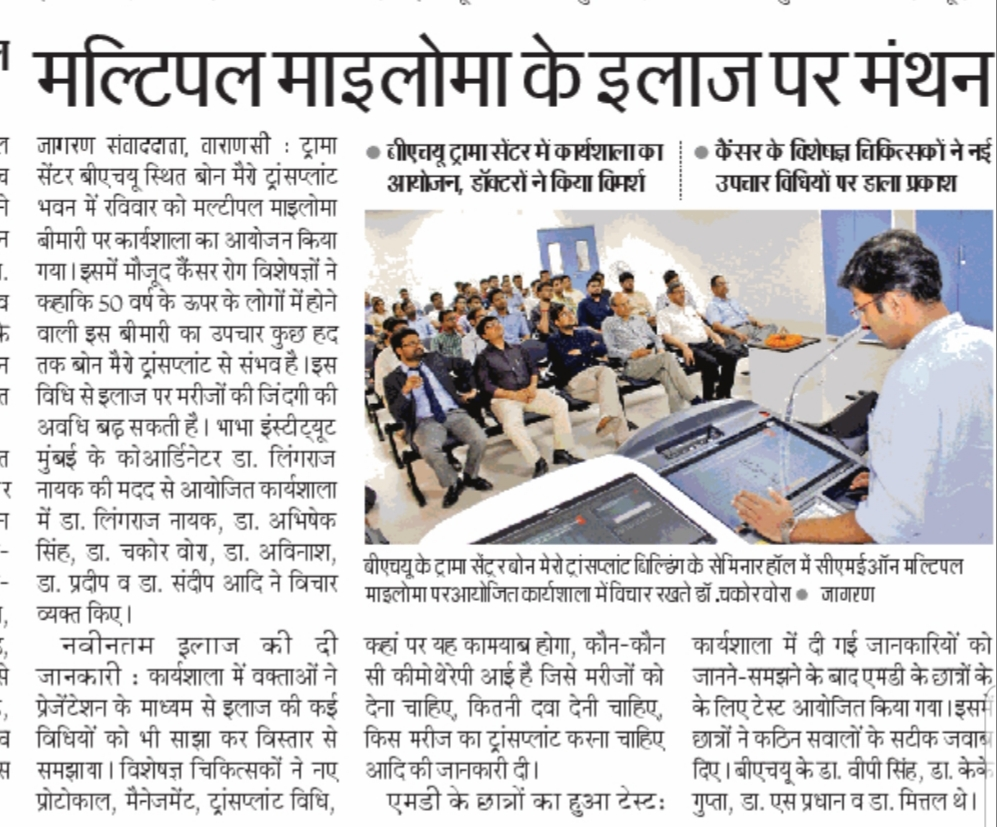
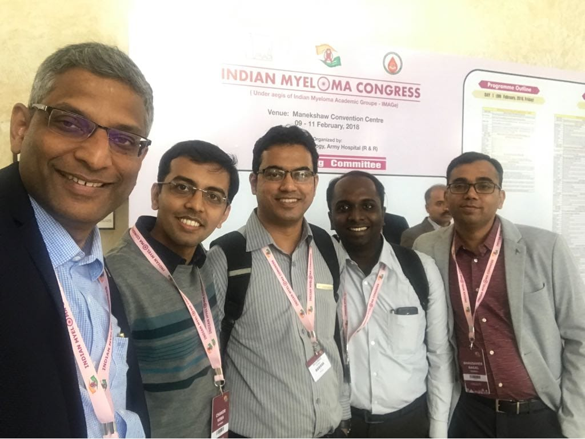

Achievements
Presentaions

- Presented scientific paper on ‘Rare cause of Leucocytoclastic vasculitis’ in 68th APICON (Annual Conference of the Association of Phycisians of India), 2013, Coimbatore, India
- Presented a poster on ‘Dual manifestation of endothelial dysfunction in a young patient with HIV/AIDS’ in 6th ASICON (National Conference of AIDS Society of India), 2013, Mumbai, India.
- Gave oral presentation on ‘A rare but treatable cause of anemia in HIV’ in 6th ASICON (National Conference of AIDS Society of India), 2013, Mumbai, India.
Publications

- “A 70 year old Lady with IHD and Rash”, a case report, Indian Journal of Rheumatology, June 2014.
- “Clinical Profile of Patients Requiring Prolonged Mechanical Ventilation and their Outcome in a Tertiary Care Medical ICU”, a prospective observational study, Journal of The Association of Physicians of India, October 2015.
- Targeted therapy in cervical cancer ESMO Open 2019; 3:e000462. doi: 10.1136/esmoopen-2018-000462
- Limited Sampling Strategy for Therapeutic Drug Monitoring of Mycophenolate Mofetil for Prophylaxis of Acute Graft Versus Host Disease in Allogeneic Stem Cell Transplantation